كبسولة تحضير · كيمياء 1 · الدرس 2-1
الذرة من الداخل
بكرة المعلم بيدخل على تركيب الذرة. هذي الكبسولة تخليك تدخل الحصة وأنت عارف وش بيقول قبل لا يقوله.
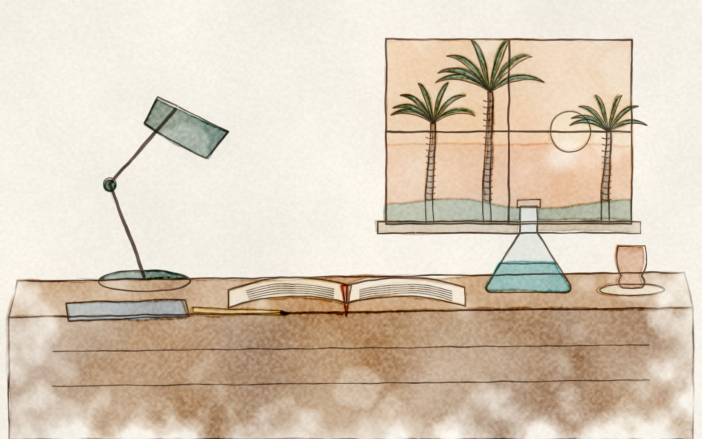
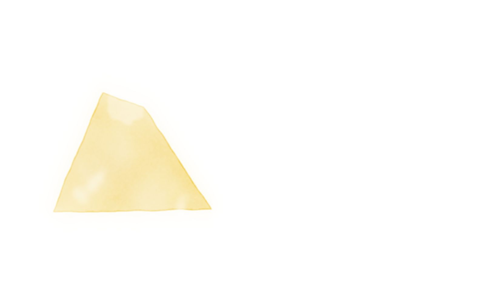
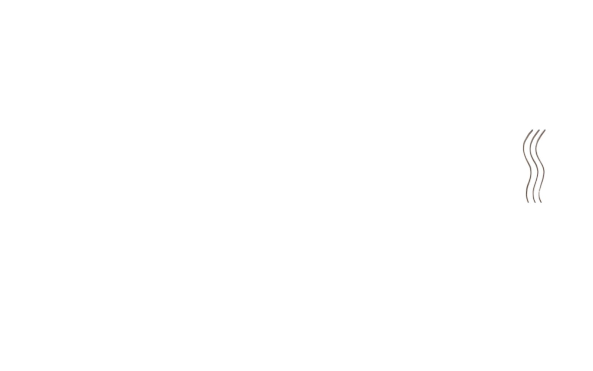
وش داخل الذرة؟
تخيّل ملعب الجوهرة. في نص الملعب النواة: صغيرة جدًا بس فيها تقريبًا كل الوزن. فيها نوعين لاعبين: بروتونات شحنتها موجبة، ونيوترونات بلا شحنة.
وفي المدرجات حول الملعب تدور الإلكترونات: خفيفة جدًا، وشحنتها سالبة. الذرة العادية متعادلة، يعني عدد الإلكترونات في المدرجات يساوي عدد البروتونات في الملعب بالضبط.
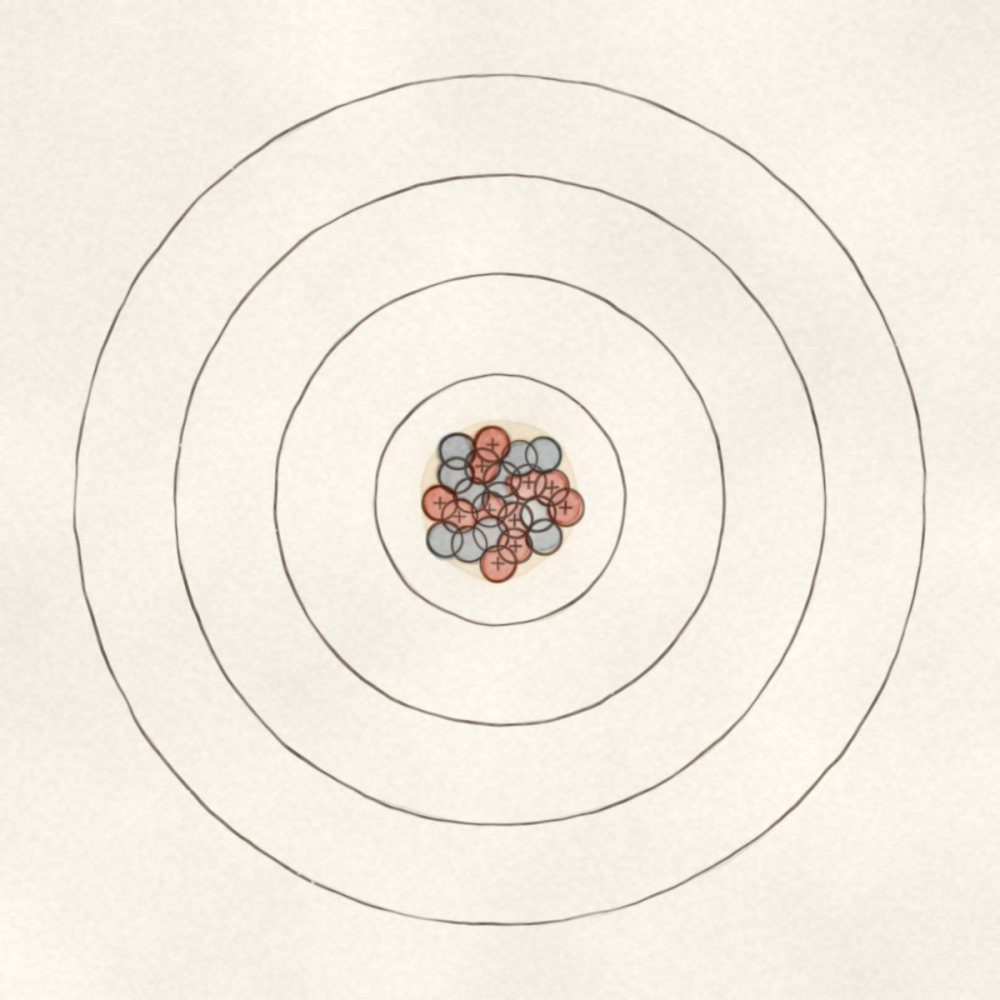
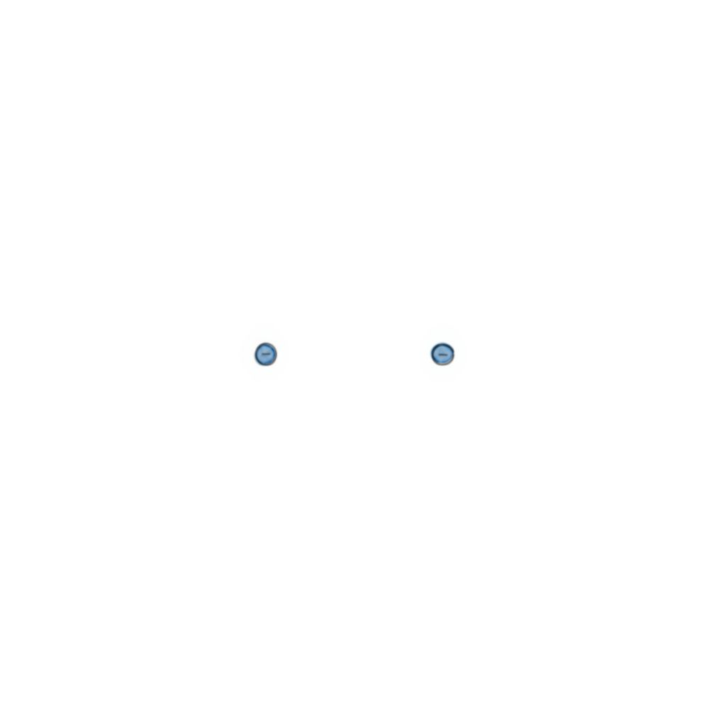
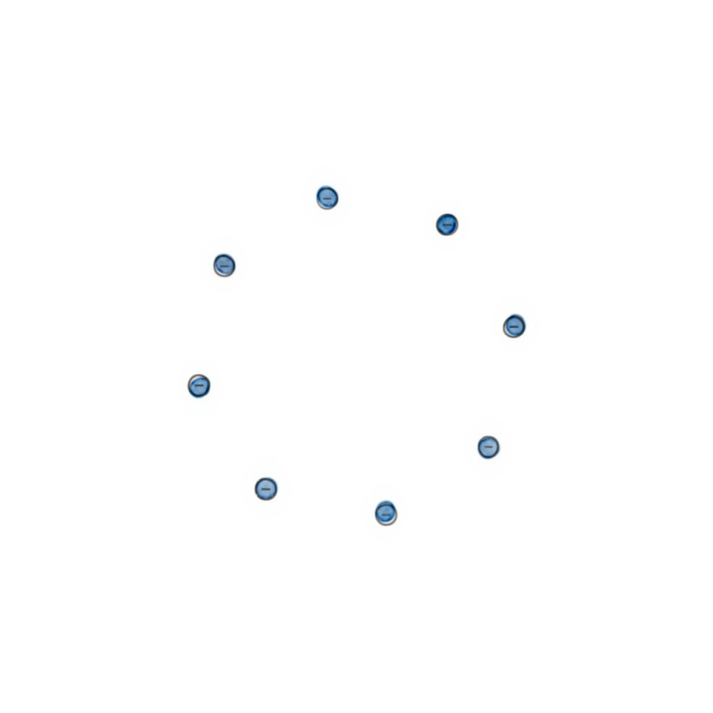
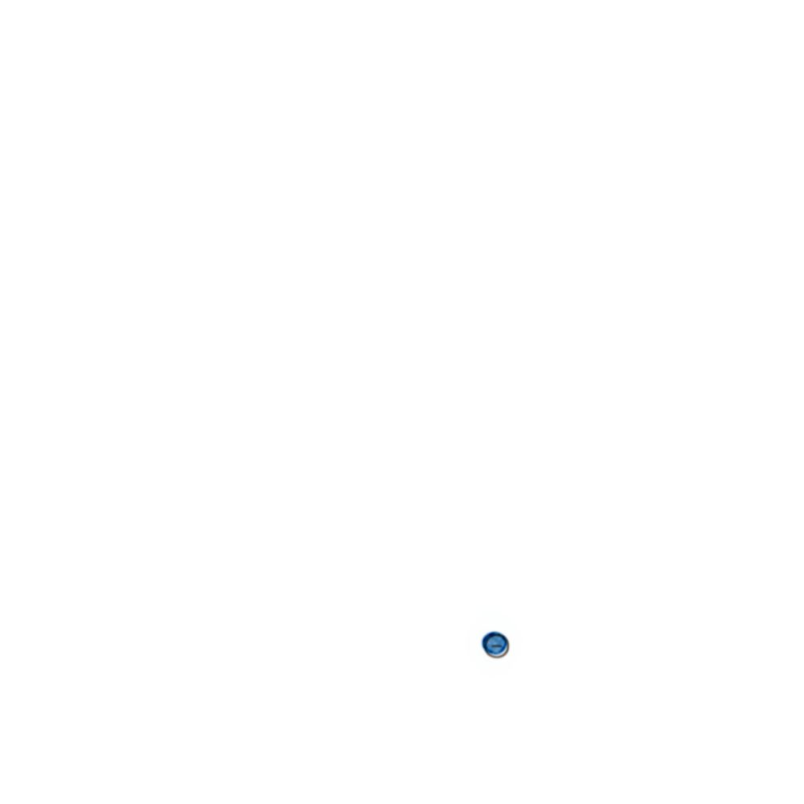
كل مدرج له سعة
الإلكترونات ما تجلس على كيفها. المدرج الأول يشبع باثنين، والثاني بثمانية، والثالث يمسك ثمانية في عناصر صفّك. تعبّي من الداخل للخارج، وما تنتقل لمدرج جديد إلا إذا امتلأ اللي قبله.
جرّب بنفسك: حرّك العدد الذري
من الهيدروجين إلى الكالسيوم. الإلكترونات البنية هي اللي في المدرج الأخير.
صوديوم Na
جدول أول عشرين عنصر
| العدد الذري | العنصر | التوزيع | الأخير |
|---|
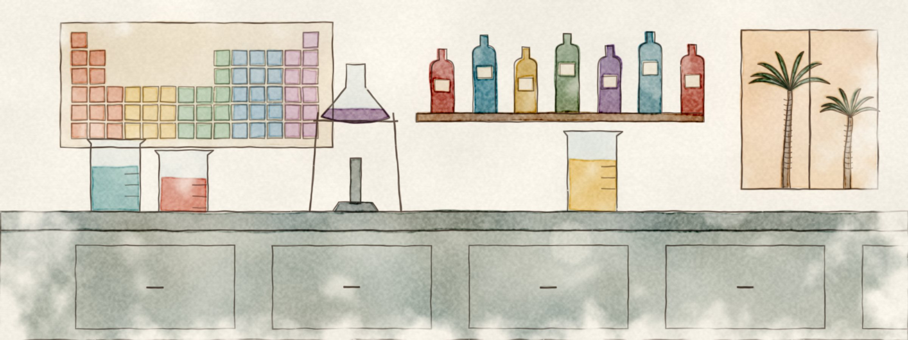
الرقم الكبير مو دايم جوابك
تحت رمز العنصر في الجدول بتشوف رقمين. الصغير هو العدد الذري، والكبير هو العدد الكتلي: مجموع البروتونات والنيوترونات مع بعض، لأنهم هم اللي في الملعب وهم اللي يوزنون.
عشان تطلع عدد النيوترونات: اطرح الصغير من الكبير. الصوديوم 23 ناقص 11 يعطيك 12 نيوترون.
ادخل الحصة بهذي الثلاث
- 1النواة ثقيلة وفيها بروتونات ونيوترونات، والإلكترونات خفيفة تدور حولها.
- 2المدرجات تتعبّى بالترتيب: 2 ثم 8 ثم 8.
- 3النيوترونات = العدد الكتلي ناقص العدد الذري.
ورشة التجربة: كيف انرسمت اللوحات
كل لوحة في الصفحة مرسومة بالكود ثم مرّت على محرك ألوان مائية مبني على OpenCV، بلا محرك صور. هذي مراحل لوحة المكتب.
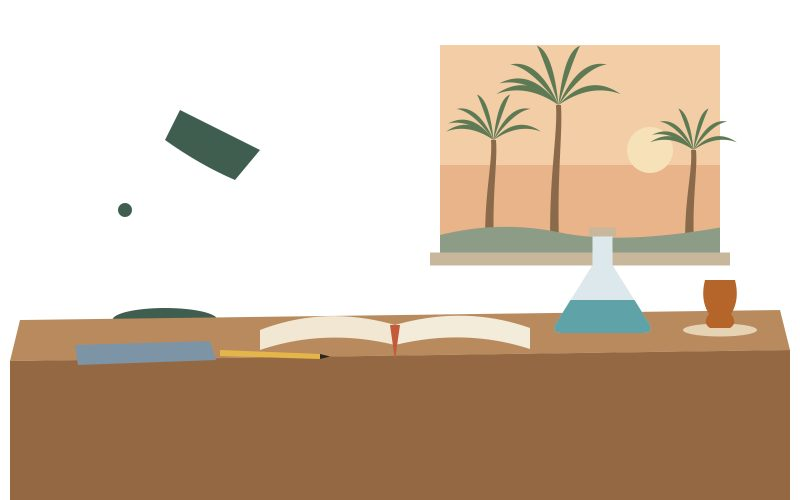
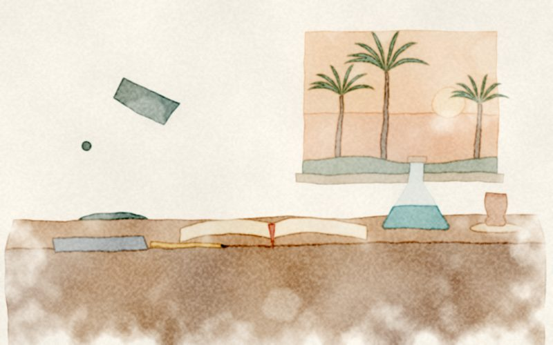
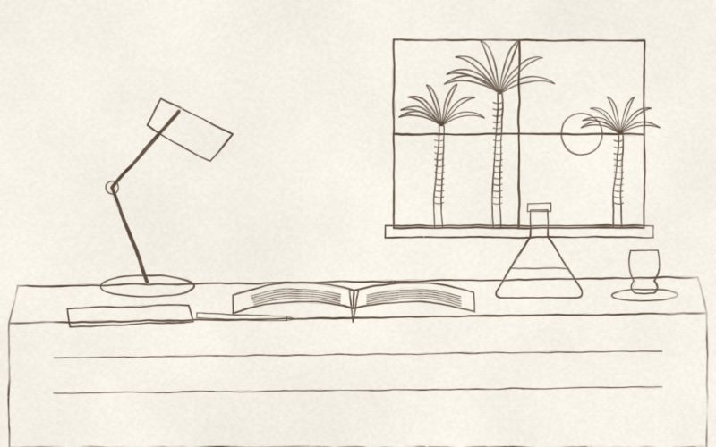
نموذج تجريبي لمكتب ماجد، التجربة 1. المحتوى مثال والهوية مقاربة.